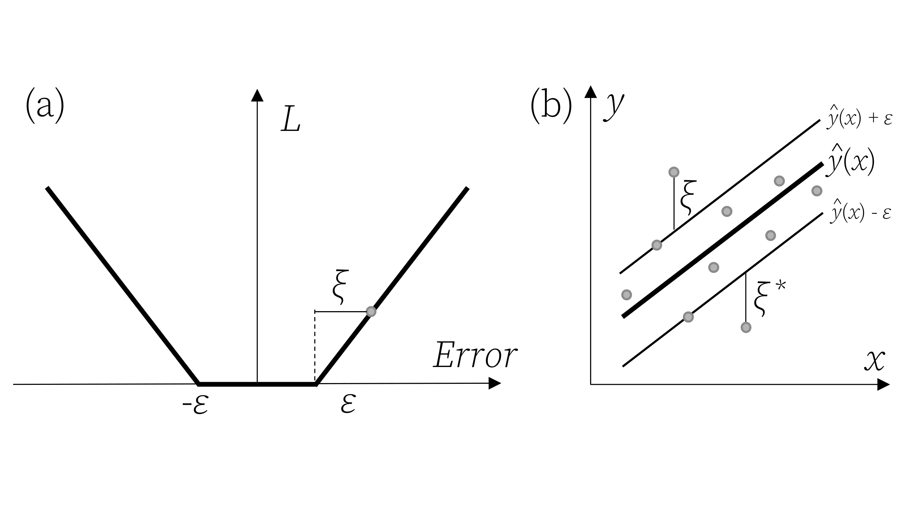
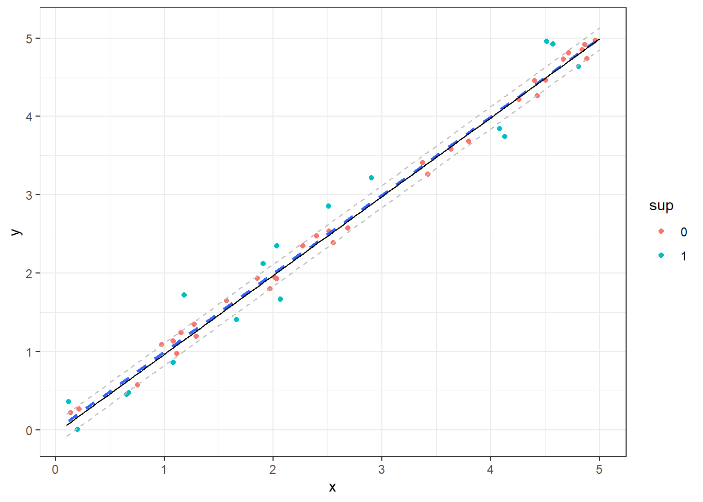
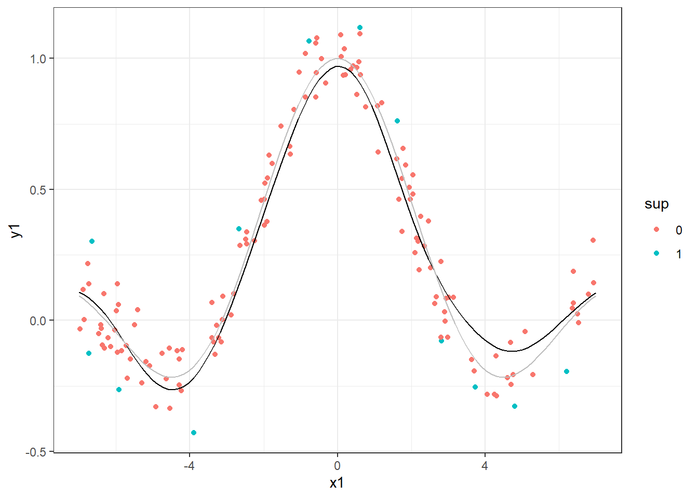
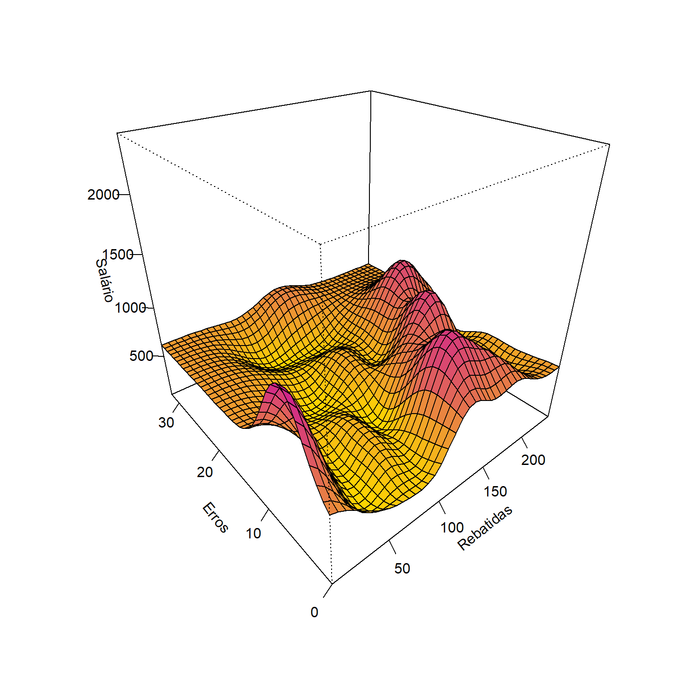
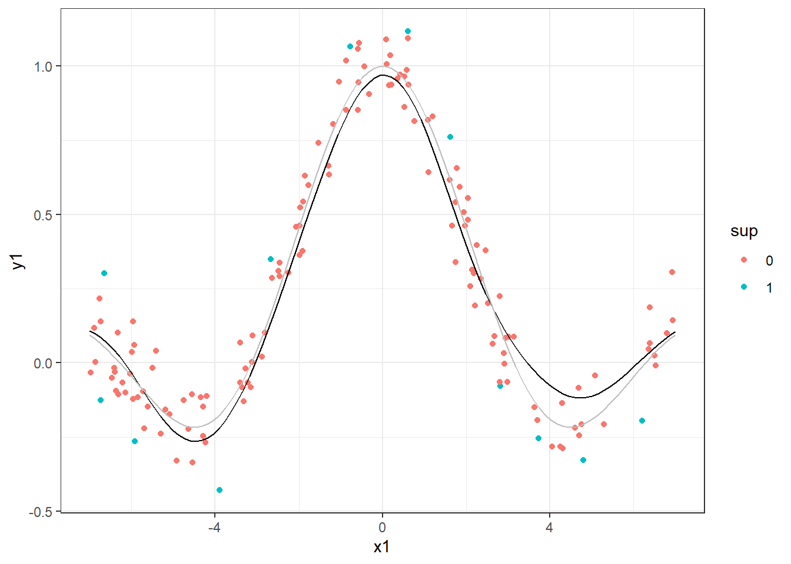
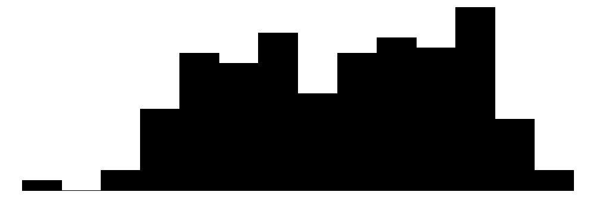
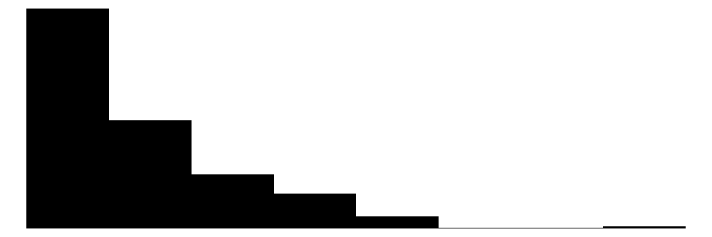
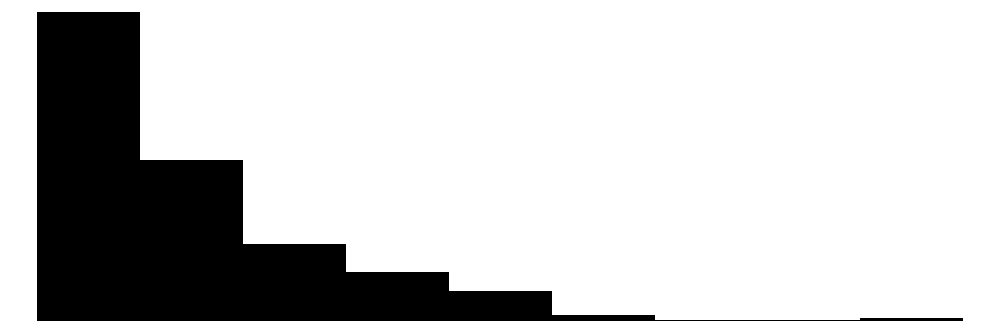
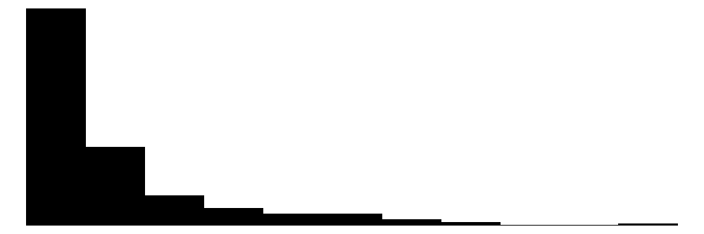
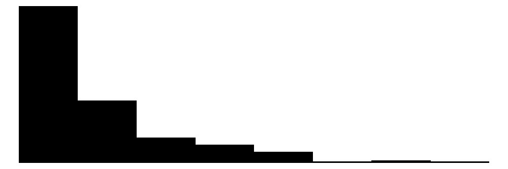

10 Regressão por vetores de suporte
10.1 Regressão de vetores de suporte para problemas lineares
Drucker et al. (1996) propuseram as máquinas de vetores de suporte para regressão (Support Vector Regression - SVR), um método que confirma os conceitos da teoria de aprendizado estatístico de Vapnik (VAPNIK, 1999). O processo de aprendizado com SVR é realizado no espaço de um subconjunto dos dados de treinamento, no espaço dos vetores de suporte. Sejam os dados de treinamento \(\{(\mathbf{x}_1, y_1), (\mathbf{x}_2, y_2), ..., (\mathbf{x}_N, y_N)\}\), \(i = 1, . .., N\), com \(\mathbf{x}_i = (x_{i1}, x_{i2}, ..., x_{ik})\). O SVR busca uma função com desvio máximo \(\varepsilon\) para os dados de treinamento. A Figura 10.1 ilustra à esquerda a função perda \(\varepsilon\)-insensitiva ou insensitiva ao erro, enquanto à direita ilustra-se a idéia geral da regressão por vetores de suporte para o caso linerar simples.
A linha central do modelo SVR consiste na linha de regressão, \(\hat{y}_i = \mathbf{x}_i^T \mathbf{w} + b\), enquanto as duas outras linhas paralelas e simétricas são chamadas de margens, \(\hat{y}_i = \mathbf{x}_i^T \mathbf{w} + b \pm \varepsilon\) e os pontos que coincidem ou estão para fora desta linha são chamados de vetores de suporte e apresentam valor na função perda maior ou igual a zero, \(\xi_i \geq 0\).
Seja um modelo linear, segundo a Equação 10.1.
\[ \begin{aligned} \hat{y}_i = \mathbf{x}_i^T \mathbf{w} + b,\text{ i = 1, ..., N} \end{aligned} \tag{10.1}\]
Para estimar os parâmetros deste modelo, pode-se otimizar uma função perda mais um termo de regularização, conforme a Equação 10.2, onde \(C\) é uma constante de regularização. Este problema é similar ao problema de regressão rígida. No entanto, a constante de regularização aqui multiplica a função perda, \(\sum_i L\), e não a soma dos quadrados dos termos do modelo, \(\mathbf{w}^T\mathbf{w} = \sum_{i=1}^N w_i^2\).
\[ \begin{aligned} C\sum_{i=1}^N L(y_i, \hat{y}_i) + \mathbf{w}^T\mathbf{w} \end{aligned} \tag{10.2}\]
A função perda \(\varepsilon\)-insensitiva usada em SVR e ilustrada na Figura 10.1 é apresentada na Equação 10.3, com \(\xi_i= \lvert y_i - \hat{y}_i \rvert - \varepsilon\).
\[ \begin{aligned} L = \Biggl\{ \begin{matrix} 0 \text{, se } \lvert y_i - \hat{y}_i \rvert < \varepsilon\\ \lvert y_i - \hat{y}_i \rvert - \varepsilon \text{, cc.} \end{matrix} \end{aligned} \tag{10.3}\]
O problema primal de SVR pode ser expresso conforme a formulação Equação 10.4 (VAPNIK, 2013).
\[ \begin{aligned} \text{Min}\ \begin{Bmatrix} \frac{1}{2}\mathbf{w}^T\mathbf{w} + C\sum_{i=1}^N(\xi_i + \xi_i^*) \end{Bmatrix} \\ \textrm{s.t.: } \Biggl\{ \begin{matrix} y_i - [\mathbf{x}_i^T\mathbf{w} + b] \leq \varepsilon + \xi_i\\ [\mathbf{x}_i^T\mathbf{w} + b] - y_i \leq \varepsilon + \xi_i^* \\ \xi_i, \xi_i^* \geq 0 \end{matrix} \end{aligned} \tag{10.4}\]
Para resolver este problema mais facilmente, a formulação dual pode ser considerada. Além disso, a formulação dual permitirá a extensão da regressão por vetores de suporte para problemas não lineares. Porém, antes, é adequado apresentar a formulação lagrangeana para o problema SVR primal, conforme Equação 10.5, onde \(\alpha_i\), \(\alpha_i^*\), \(\eta_i\) e \(\eta_i^*\) são os multiplicadores de Lagrange, que devem ser não-negativos (VAPNIK, 1999; 2013).
\[ \begin{split} L = \frac{1}{2}\mathbf{w}^T\mathbf{w} + C\sum_{i=1}^N(\xi_i + \xi_i^*) - \sum_{i=1}^N \alpha_i(\varepsilon + \xi_i - y_i + \mathbf{x}_i^T\mathbf{w} + b) \\ - \sum_{i=1}^N \alpha_i^*(\varepsilon + \xi_i^* - \mathbf{x}_i^T\mathbf{w} - b + y_i) -\sum_{i=1}^N(\eta_i\xi_i + \eta_i^*\xi_i^*) \end{split} \tag{10.5}\]
Derivando a função Lagrangeana em relação às variáveis do problema primal, \(\mathbf{w}\), \(b\), \(\xi_i\) e \(\xi_i^*\), e igualando a zero, as condições de otimalidade de primeira ordem são obtidas conforme segue (SMOLA e BERNHARD, 2004).
\[ \begin{aligned} &\frac{\partial L}{\partial b} = \sum_{i=1}^N(\alpha_i - \alpha_i^*) = 0 \\ &\frac{\partial L}{\partial \mathbf{w}} = \mathbf{w} - \sum_{i=1}^N(\alpha_i - \alpha_i^*)\mathbf{x}_i = 0 \\ &\frac{\partial L}{\partial \xi_i} = C - \alpha_i - \eta_i = 0 \\ &\frac{\partial L}{\partial \xi_i^*} = C - \alpha_i^* - \eta_i^* = 0 \\ \end{aligned} \]
Substituindo os resultados das derivadas na formulação lagrangeana, obtém-se a formulação dual do problema de SVR, conforme Equação 10.6 (VAPNIK, 1999; DRUCKER, 1996; SMOLA e BERNHARD, 2004).
\[ \begin{aligned} \text{Max}\ &\begin{Bmatrix} -\frac{1}{2}\sum_{i,j}^N(\alpha_i - \alpha_i^*)(\alpha_j - \alpha_j^*)\mathbf{x}_i\mathbf{x}_j \\ -\varepsilon\sum_{i=1}^N(\alpha_i + \alpha_i^*) + \sum_{i=1}^N y_i(\alpha_i - \alpha_i^*) \end{Bmatrix}\\ \textrm{s.t.: } \Biggl\{ &\begin{matrix} \sum_{i=1}^N(\alpha_i - \alpha_i^*) = 0\\ \alpha_i, \alpha_i^* \in [0,C] \\ \end{matrix} \end{aligned} \tag{10.6}\]
Nesta formulação dual, \(\mathbf{w}\) é reescrito como uma combinação linear das observações de treinamento, \(\mathbf{x}_i\mathbf{x}\), \(\eta_i\) e \(\eta_i^*\) são descritos em função de \(C\), \(\alpha_i\) e \(\alpha_i^*\), sendo estes eliminados. Além disso, \(\mathbf{w} = \sum_{i=1}^N(\alpha_i + \alpha_i^*)\mathbf{x}_i\). Na regressão por vetores de suporte, o modelo inicial, \(\hat{y}_i = \mathbf{x}_i^T \mathbf{w} + b\), é reescrito como combinação linear de parte dos dados de treinamento, segundo a Equação 10.7, incluindo apenas os vetores de suporte, ou seja, \(\mathbf{x}_i\) tal que \(\alpha_i > 0\) ou \(\alpha_i^* > 0\), \(i = 1, ..., N\), com \(\xi_i\) definindo a folga ou erro para além da margem. A SVR aumenta a dimensionalidade no espaço dos vetores de suporte em detrimento do espaço de preditores (VAPNIK, 2013).
\[ \hat{y} = \sum_{i=1}^N(\alpha_i - \alpha_i^*)\mathbf{x}_i\mathbf{x} + b \tag{10.7}\]
10.2 Truque de kernel e SVR para problemas não lineares
O modelo SVR depende apenas do produto escalar dos dados de treinamento, \(\mathbf{x}_i\). Para aproximar funções mais complexas, o produto escalar \(\mathbf{x}_i\mathbf{x}_j\) pode ser substituído por um kernel, \(k(\mathbf{x}_i,\mathbf{x}_j)\). Algumas opções incluem o kernel linear, \(k(\mathbf{x}_i,\mathbf{x}_j) = \mathbf{x}_i\mathbf{x}_j\), o polinomial, \(k(\mathbf{x }_i,\mathbf{x}_j) = (\mathbf{x}_i\mathbf{x}_j + c)^d\), e o kernel de base radial, \(k(\mathbf{x}_i,\mathbf{x }_j) = \exp(-\gamma||\mathbf{x}_i - \mathbf{x}_j||^2)\). Portanto, o modelo SVR final pode ser expresso conforme a Equação Equação 10.8. De acordo com o kernel selecionado, os hiperparâmetros \(\varepsilon\), \(C\) e outros específicos do kernel devem ser escolhidos por validação cruzada e grid search.
\[ \hat{y} = \sum_{i=1}^N(\alpha_i - \alpha_i^*)k(\mathbf{x}_i,\mathbf{x}) + b \tag{10.8}\]
10.3 Exemplos de regressão por vetores de suporte
Na Figura 10.2 observa-se um modelo SVR em linha preta contínua para um caso de regressão simples, sendo utilizado um kernel linear. Pode-se destacar em verde as observações que são vetores de suporte. O modelo plotado em linha pontilhada azul consiste em um modelo de regressão linear simples obtido por mínimos quadrados.
Setting default kernel parameters 
Outros casos mais complexos como o seguinte podem ser aproximados por SVR com a aplicação do kernel adequado. Na Figura 10.3 foi utilizado um kernel radial. A função considerada para simular os dados é plotada em cinza e o modelo em preto.

A regressão por vetores de suporte pode ser aplicada a casos de múltiplas variáveis independentes. A Figura 10.4 ilustra um modelo de SVR aplicado aos dados da liga maior americana de Baseball para as temporadas de 1986 e 1987, considerando apenas duas das 19 variáveis preditoras disponíveis. Os dados plotados em verde são vetores de suporte.

Independente do caso é importante lembrar de se utilizar de validação cruzada e grid search para definir os níveis adequados dos hiperparâmetros \(\varepsilon\), \(C\), tipo de kernel e outros hiperparâmetros relacionados ao kernel adequado a cada caso.
10.4 Implementações em R
A seguir serão expostas as implementações necessárias para obter os resultados do capítulo.
10.4.1 Caso linear simples.
library(kernlab)
library(modelsummary)
library(ggplot2)
set.seed(9)
x <- runif(50, 0.1, 5)
y <- x + rnorm(50, sd= 0.2)
data <- data.frame(x,y)
xseq <- seq(0.1, 5, length=100)
m <- ksvm(x, y, kernel ="vanilladot", data=data) Setting default kernel parameters new <- predict(m, xseq)
data$sup <- as.factor(ifelse(1:50%in%m@alphaindex, 1, 0))
xsize <- 5-0.1
ysize <- max(new)-min(new)
v <- 0.1/(ysize/sqrt(xsize^2+ysize^2))data_pred <- data.frame(x=xseq,
y=new)
ggplot() +
geom_point(data=data, aes(x,y,col=sup)) +
geom_smooth(data=data, aes(x,y),
method = lm, se = FALSE, lty=2) +
geom_line(data=data_pred, aes(x,y)) +
geom_line(data=data_pred, aes(x,y+v),lty=2,col="grey") +
geom_line(data=data_pred, aes(x,y-v),lty=2,col="grey") +
theme_bw()
set.seed(50)
x1 <- runif(150, -7, 7)
y1 <- sin(x1)/x1 + rnorm(150, sd=0.1)
data1 <- data.frame(x1,y1)
xseq1 <- seq(-7, 7, length=100)
m1 <- ksvm(x1, y1, data=data1,
kernel="rbfdot", C=10, epsilon = .5)
new1 <- predict(m1, xseq1)
data1$sup <- as.factor(ifelse(1:150 %in% m1@alphaindex, 1, 0))10.4.2 Caso não linear simples
data_pred1 <- data.frame(x=xseq1,
y_=new1,
y=sin(xseq1)/xseq1)
ggplot() +
geom_point(data=data1, aes(x1,y1,col=sup)) +
geom_line(data=data_pred1, aes(x,y_), col = "black") +
geom_line(data=data_pred1, aes(x,y), col = "grey") +
theme_bw()
10.4.3 Previsão do salário de jogadores de Baseboll
Seja um modelo de SVR aplicado aos dados da liga maior americana de Baseball para as temporadas de 1986 e 1987.
data(Hitters, package = "ISLR")
dados2 <- na.omit(Hitters)
datasummary_skim(dados2)| Unique | Missing Pct. | Mean | SD | Min | Median | Max | Histogram | |
|---|---|---|---|---|---|---|---|---|
| AtBat | 209 | 0 | 403.6 | 147.3 | 19.0 | 413.0 | 687.0 |  |
| Hits | 130 | 0 | 107.8 | 45.1 | 1.0 | 103.0 | 238.0 | |
| HmRun | 35 | 0 | 11.6 | 8.8 | 0.0 | 9.0 | 40.0 | |
| Runs | 92 | 0 | 54.7 | 25.5 | 0.0 | 52.0 | 130.0 | |
| RBI | 94 | 0 | 51.5 | 25.9 | 0.0 | 47.0 | 121.0 | |
| Walks | 87 | 0 | 41.1 | 21.7 | 0.0 | 37.0 | 105.0 | |
| Years | 21 | 0 | 7.3 | 4.8 | 1.0 | 6.0 | 24.0 | |
| CAtBat | 257 | 0 | 2657.5 | 2286.6 | 19.0 | 1931.0 | 14053.0 |  |
| CHits | 241 | 0 | 722.2 | 648.2 | 4.0 | 516.0 | 4256.0 |  |
| CHmRun | 129 | 0 | 69.2 | 82.2 | 0.0 | 40.0 | 548.0 |  |
| CRuns | 226 | 0 | 361.2 | 331.2 | 2.0 | 250.0 | 2165.0 | |
| CRBI | 226 | 0 | 330.4 | 323.4 | 3.0 | 230.0 | 1659.0 | |
| CWalks | 207 | 0 | 260.3 | 264.1 | 1.0 | 174.0 | 1566.0 |  |
| PutOuts | 199 | 0 | 290.7 | 279.9 | 0.0 | 224.0 | 1377.0 | |
| Assists | 145 | 0 | 118.8 | 145.1 | 0.0 | 45.0 | 492.0 | |
| Errors | 29 | 0 | 8.6 | 6.6 | 0.0 | 7.0 | 32.0 | |
| Salary | 150 | 0 | 535.9 | 451.1 | 67.5 | 425.0 | 2460.0 | |
| N | % | |||||||
| League | A | 139 | 52.9 | |||||
| N | 124 | 47.1 | ||||||
| Division | E | 129 | 49.0 | |||||
| W | 134 | 51.0 | ||||||
| NewLeague | A | 141 | 53.6 | |||||
| N | 122 | 46.4 |
Separando dados para treino.
set.seed(1)
tr <- round(0.5*nrow(dados2))
treino <- sample(1:nrow(dados2), tr, replace = F)Treinando um modelo considerando todas as variáveis regressoras.
svr1 <- ksvm(Salary ~ ., dados2[treino,], C=10, epsilon = .001,
kernel = "rbfdot")
svr1Testando o modelo.
metrics <- function(obs, pred) {
RSE <- sum((obs - pred)^2)
SST <- sum((obs - mean(obs))^2)
R2 <- 1 - RSE/SST
MAE <- mean(abs(obs - pred))
RMSE <- sqrt(mean((obs - pred)^2))
return(
data.frame(RMSE = RMSE,
MAE = MAE,
R2 = R2))
}pred2 <- predict(svr1, dados2[-treino,])
metrics(dados2$Salary[-treino],pred2)Referências
Drucker, H., Burges, C. J., Kaufman, L., Smola, A., & Vapnik, V. (1996). Support vector regression machines. Advances in neural information processing systems, 9.
Hastie, T., Tibshirani, R., Friedman, J. H., & Friedman, J. H. (2009). The elements of statistical learning: data mining, inference, and prediction (Vol. 2, pp. 1-758). New York: springer.
Smola, Alex J., and Bernhard Schölkopf. “A tutorial on support vector regression.” Statistics and computing 14 (2004): 199-222.
Vapnik, V. N. (1999). An overview of statistical learning theory. IEEE transactions on neural networks, 10(5), 988-999.
Vapnik, V. (2013). The nature of statistical learning theory. Springer science & business media.